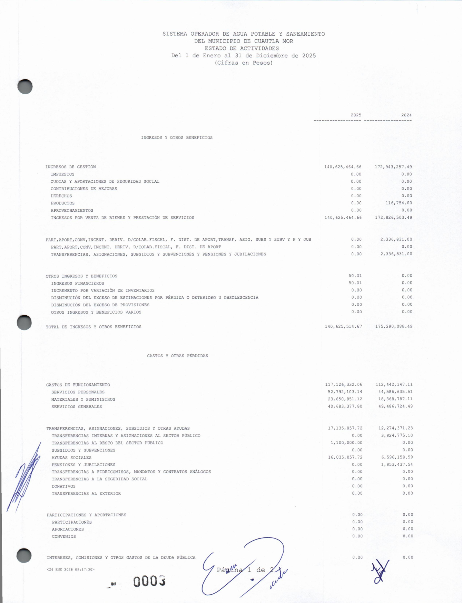
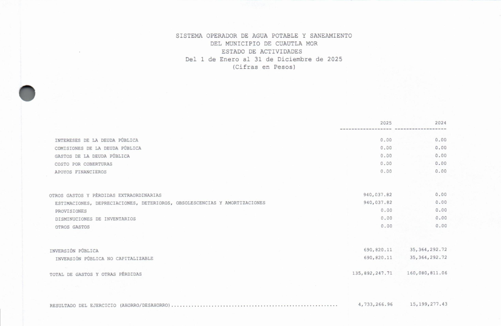
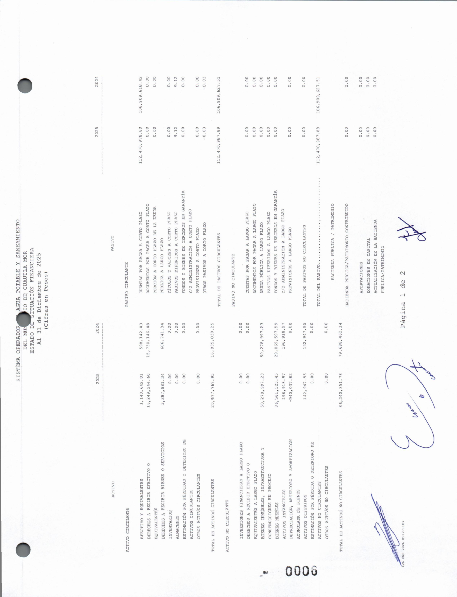

El agua que se cobra y no se repara
El organismo operador de agua de Cuautla, el SOAPSC, recauda cientos de millones por vender agua y casi no invierte en el servicio. Según su propia cuenta pública 2025, en ese año recortó 19.1 millones a la obra pública y a la red del agua llegaron 690 mil, mientras el gasto en vehículos subió a 11 millones. Cerró el ejercicio con patrimonio negativo, retuvo 22.7 millones de ISR e IMSS de sus trabajadores sin enterarlos y adeuda 6.7 millones a la CONAGUA. Con la distinción de Acemoglu y Robinson entre instituciones extractivas e inclusivas.
En Cuautla, cada familia paga el agua recibo por recibo. Conviene preguntarse qué hace ese dinero cuando entra a las cuentas del organismo operador, el SOAPSC. La respuesta no está en la calle ni en un rumor: está en su propia cuenta pública de 2025, el documento que el organismo entregó a la Entidad Superior de Auditoría y Fiscalización del estado, la ESAF, el 30 de enero de 2026. Y lo que ese documento describe no es, precisamente, el agua.
Hay una distinción académica que ayuda a leerlo. Daron Acemoglu y James Robinson, reconocidos con el Premio Nobel de Economía en 2024 junto con Simon Johnson, separan las instituciones en dos familias: las inclusivas, diseñadas para servir a la mayoría, y las extractivas, diseñadas para extraer de la mayoría en beneficio de unos pocos. Un organismo operador de agua es, por la misión que lo justifica, una institución inclusiva: existe para llevar agua. La cuenta pública permite poner a prueba si se comportó como lo que debe ser, o como lo contrario.
Primer dato, y es el que más duele. En 2025 el organismo recortó 19.1 millones de pesos del presupuesto de obra pública. A la red del agua, la tubería, las fugas, la infraestructura que da el servicio, llegaron 690 mil pesos. En el mismo ejercicio, el gasto en vehículos pasó de 4.4 a 11 millones, con 6.6 millones en compras que casi no estaban presupuestadas. El organismo del agua no invirtió en agua. Compró camionetas.


Segundo dato. El SOAPSC no es pobre: recauda del orden de 140 millones de pesos al año, casi todo por la venta del servicio. Y aun así cerró 2025 técnicamente quebrado, con un patrimonio negativo de 5.55 millones. Un organismo que ingresa cientos de millones y termina debiendo más de lo que tiene. ¿A quién le debe? Entre otros, a sus propios trabajadores y a la nación: la cuenta pública reporta 22.7 millones en retenciones de ISR e IMSS que descontó de los sueldos y no enteró a la autoridad, y 6.7 millones que adeuda a la Comisión Nacional del Agua por los derechos de extracción del agua que después revende. Retuvo lo del trabajador y no pagó ni el derecho a sacar el agua del subsuelo.
El organismo del agua no invirtió en agua. Compró camionetas. La pregunta no es si tiene dinero: es para quién.

Tercer dato, más discreto pero revelador. La cuenta pública registra 10.6 millones de pesos en honorarios asimilados a salarios. Es el rubro donde se paga como sueldo a quien no está en la plantilla formal, el espacio contable donde suelen vivir las asesorías sin rostro y sin entregable visible. No prueba, por sí solo, una irregularidad; sí obliga a preguntar quiénes cobraron esos 10.6 millones, por qué concepto y con qué resultado para el servicio.
Es momento de ser justos, porque la lectura fácil también engaña. La misma cuenta pública muestra 15.9 millones registrados como descuentos en la recaudación, es decir, condonaciones en los recibos. Puede tratarse de un subsidio legítimo a familias que no alcanzan a pagar, y no de dinero desviado. Ese matiz importa, y quien lo omita para inflar la indignación falta a la verdad tanto como quien esconde el resto.
Aun con ese matiz, el conjunto dibuja un patrón que no depende de una sola cifra. Y no es cosa de un año: la cuenta pública de 2024 ya mostraba lo mismo con otros nombres, asesorías pagadas al doble de lo aprobado, obra presupuestada y no ejecutada, transferencias al municipio, y un efectivo que se desplomó pese al ingreso récord. Cambiaron los directores; la mecánica se quedó.
No afirmo que exista delito. Eso lo dirán las auditorías que ya corren: la forense que la Auditoría Superior de la Federación ordenó sobre el gasto federalizado de Cuautla, la número 1417, y la revisión de la ESAF, que ya tiene el documento en la mano. La calificación jurídica no es tarea de esta columna, y rige, para todos, la presunción de inocencia. Lo que sí puede hacer cualquier ciudadano, sin esperar a nadie, es leer la cuenta pública y medir una distancia: la que hay entre cobrar el agua y repararla.
Esa distancia tiene nombre desde que Acemoglu y Robinson lo pusieron. Una institución que recauda de muchos y no devuelve el valor al servicio que justifica su existencia deja de ser un operador de agua y empieza a parecerse a otra cosa. La pregunta, entonces, no es si el organismo tiene dinero. Recauda cientos de millones. La pregunta, la única que de verdad importa, es para quién.
El pasado que se sienta en la tesorería Ver el expediente →
SRVO
Fuentes y referencias citadas
- Cuenta Pública Anual 2025 del SOAPSC, entregada al Congreso de Morelos y sellada por la ESAF (folio 224), 30 de enero de 2026. Estado de Situación Financiera y Estado de Actividades al 31 de diciembre de 2025.
- Auditoría Superior de la Federación, Modificaciones al PAAF de la Cuenta Pública 2025, DOF 5 de junio de 2026 (auditoría 1417, Municipio de Cuautla).
- Daron Acemoglu y James A. Robinson, Por qué fracasan los países. Los orígenes del poder, la prosperidad y la pobreza (Deusto, 2012). Premio Nobel de Economía 2024 (con Simon Johnson).
- Ley de Presupuesto, Contabilidad y Gasto Público del Estado de Morelos, artículos 26 y 27 (obligación de comprobar el gasto).